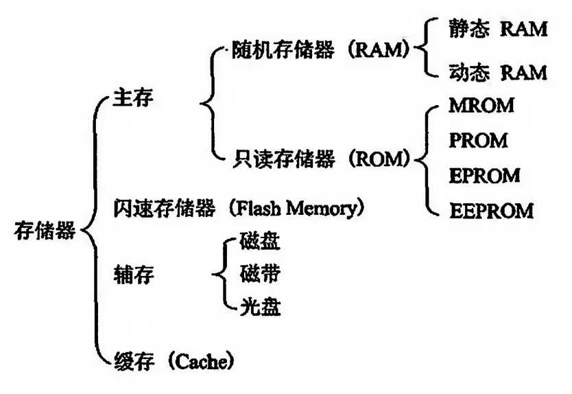
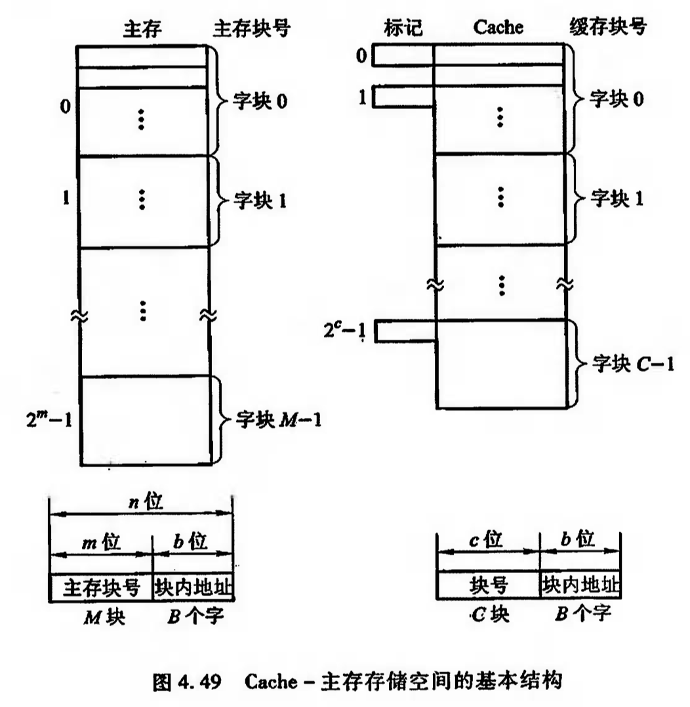
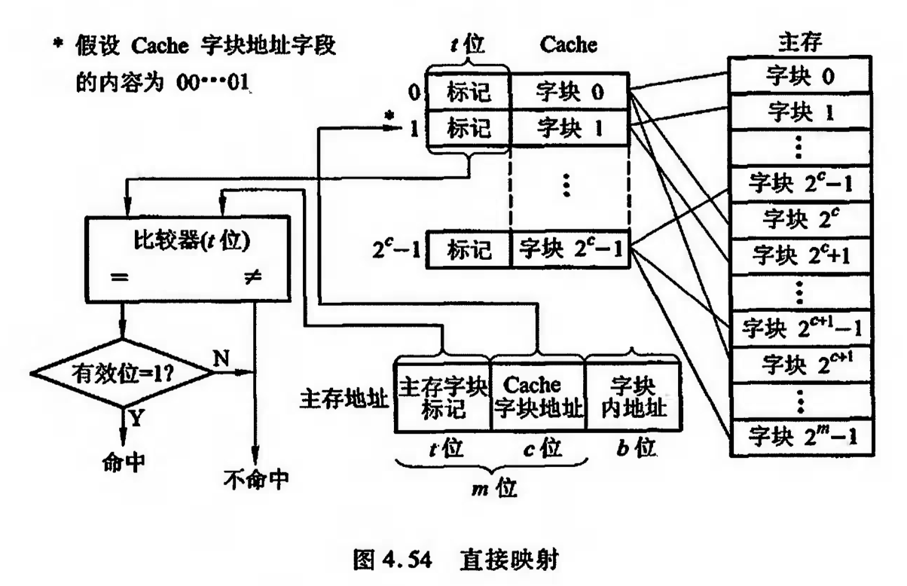
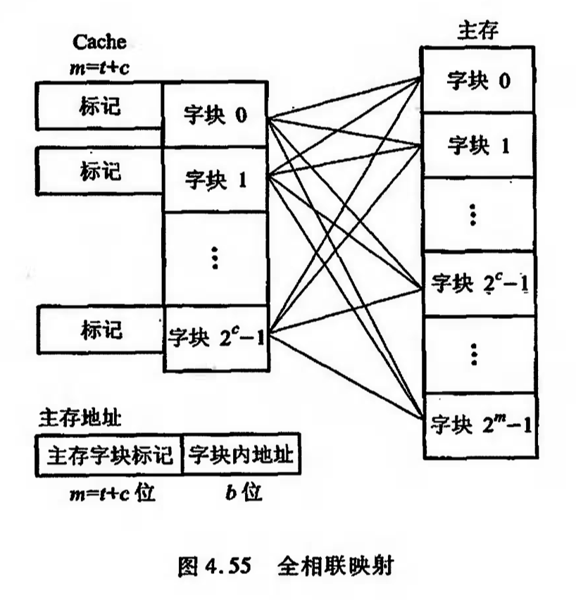
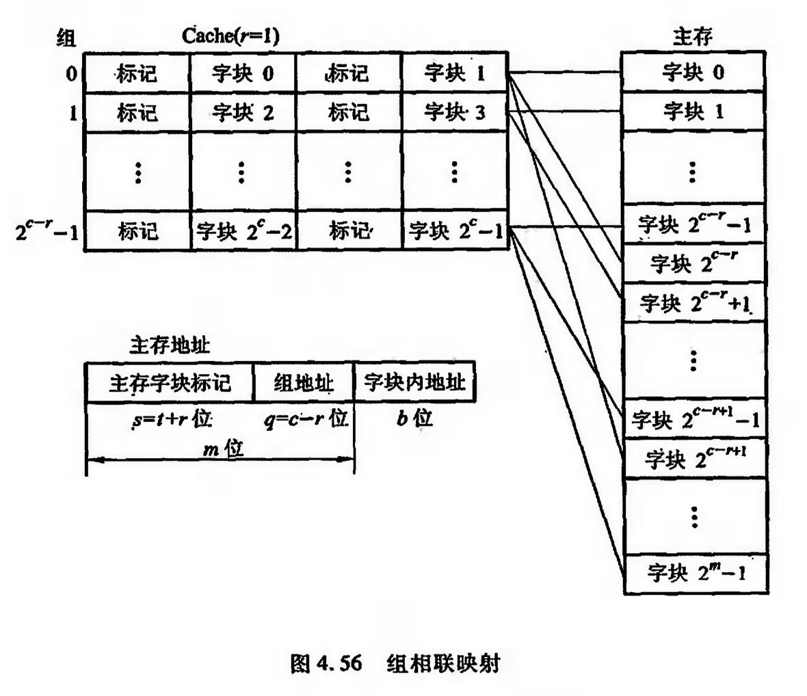

存储器
按存取方式分类
- 随机存储器 RAM：可读/写存储器。存储器的任何一个存储单元的内容都可以随机存取，而且存取时间与存储单元的物理位置无关。主存采用。
- 只读存储器 ROM：只读存储器，通常存放固定不变的程序。
- 串行访问存储器：需按其物理位置先后顺序寻找地址。
区分1：MB-MByte 兆(2^20)字节；Mb-Mbit 兆位；1 MB = 8 Mb
区分2：字长k位，1字 = k字节，（按字节寻址的范围） = k * （按字寻址的范围），1字节 = 8位
概述
存储器分类

存储器层次结构：
- 寄存器：在CPU内部
- 缓存：cache
- 主存：存放将要参与运行的程序和数据
缓存-主存层次主要解决存储系统的容量问题
- 辅存：存放暂时未用到的程序和数据文件
主存-辅存层次主要解决存储系统的容量问题
主存储器
- 地址总线用于指出存储单元地址号，根据该地址可读出或写入一个存储字。k 位，字长为 s 字节的主存，按字节寻址的范围是 2^k ，按字寻址的范围是 2^k/s。
- 存储容量 = 存储单元个数 * 存储字长，单位：二进制代码位数；或 /8 （字节总数）
- 存储速度
- 读出时间：从存储器接收到有效地址开始，到产生有效输出所需的全部时间
- 写入时间：从存储器接收到有效地址开始，到数据写入被选中单元为止所需的全部时间
- 存取周期：存储器进行连续两次独立的存储器操作所需的最小间隔时间，通常存取周期大于存取时间
- 存储器带宽，单位时间内存储器存取的信息量，单位：字/秒 或 字节/秒 或 位/秒
地址线：单向输入，位数与芯片容量有关
数据线：双向，位数与芯片可读出或写入的数据位数（芯片容量）有关
地址线和数据线的位数共同反映存储芯片的容量，地址线 m 根，数据线 n 根，芯片容量：$n 2^m$位
控制线：读/写控制线和片选线
译码驱动方式：线选法 / 重合法
随机存取存储器
$\overline{\mathrm{CS}}$ 片选信号，低电平有效
$\overline{\mathrm{WE}}$ 写允许信号，低电平为写，高电平为读
$\overline{\mathrm{RAS}}$ 行选信号，$\overline{\mathrm{CAS}}$ 列选信号
- 静态/动态RAM
- 读写时序
- 动态RAM刷新
- 集中刷新：对全部存储单元集中一段时间逐行进行刷新，此刻必须停止读写操作
- 分散刷新：对每行存储单元的刷新分散到每个存取周期完成。$t_C$存取周期，$t_C=t_M+t_R$，$t_M$用于读写或维持信息，$t_R$用于刷新
- 异步刷新：利用最大刷新间隔为2ms的特点，每隔 2ms/k行 刷新一行，刷新一行只停止一个存取周期
只读存储器
- 存储器与CPU连接
- 位扩展：增加存储字长，扩展数据线，2片1Kx4位的芯片可组成1Kx8位的存储器
- 字扩展：增加存储器字的数量，扩展地址线，2片1Kx8位的存储芯片可组成2Kx8位的存储器
- 连接：
- 地址线连接：将CPU地址线的低位与存储芯片的地址线相连
- 数据线连接：数据为基础数与CPU的数据位数相等
- 读/写命令线连接：与存储芯片的读/写控制端相连，高电平为读，低电平为写
- 片选线连接：$\overline{\mathrm{CS}}$端是否能收到来自CPU的片选有效信号
- 选择存储芯片：ROM用于存放系统程序、标准子程序等，RAM为用户编程设计
存储器的校验
异或：$0\oplus0=0, 0\oplus1=1$
提高访存速度
单体多字系统/多体并行系统
高速缓冲存储器 Cache
cache的出现使CPU可以不直接访问主存，而与高速Cache交换信息
工作原理
将主存和Cache的地址分为两块

Cache命中：CPU读取主存某字时字已在缓存中，可以直接访问，命中率$h=\frac{N_c}{N_c+N_m}$，$N_c$为访问Cache总命中次数，$N_m$为访问主存总次数；Cache-主存访问平均时间$t_a=ht_c+(1-h)t_m$，访问效率$e\frac{t_c}{t_a}$。Cache容量越大，CPU命中率越高。
替换机构——替换算法
读写操作
- 写直达法：写操作时，数据既写入Cache又写入主存
- 写回法：写操作时，只把数据写入Cache而不写入主存，但当Cache数据被替换出去时才写回主存
改进：
- 单一缓存和两级缓存
- 统一缓存和分立缓存
Cache-主存地址映射
直接映射
每个主存快只与一个缓存快对应
全相联映射
允许主存中每一字块映射到Cache中的任何一块位置
组相联映射
把Cache分为Q组，每组有R块，且$i=j\mathrm{mod}Q$，其中$i$为缓存的组号，$j$为主存的块号
$2^c$表示Cache总块数，$2^q$表示Cache分组个数，$2^r$表示组内包含的块数。当$r=0$时是直接映射方式，当$r=c$时是全相联映射方式。
替换算法
- 先进先出（FIFO）算法
- 近期最少使用（LRU）算法
- 随机法